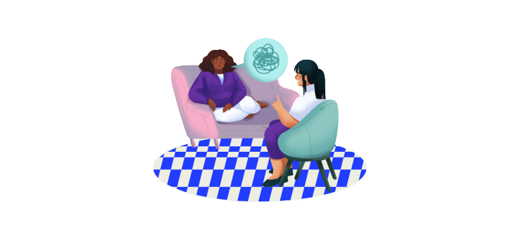
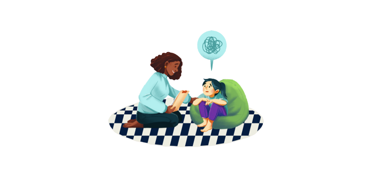

O acompanhamento psicológico é muito importante no contexto de doenças, tanto para o paciente quanto para os acompanhantes.
O diagnóstico e tratamento podem trazer muitos sentimentos, como o medo, a ansiedade, a tristeza e frustações.
Muitas das vezes é preciso ter alterações na rotina, alguns pacientes e acompanhantes precisam passar muito tempo dentro de hospitais, que pode afetar no trabalho e nos estudos.
É importante lembrar que a saúde mental ajuda na aceitação de tratamentos.
Por isso o acompanhamento psicológico tem extrema importância nos tratamentos, por ajudar a lidar com esses momentos de decisões difíceis e ter um espaço que possa ser usado como um apoio para ajudar a melhorar a exaustão mental.
Agende já uma sessão :
Agende já uma sessão para o seu pequeno(a):
